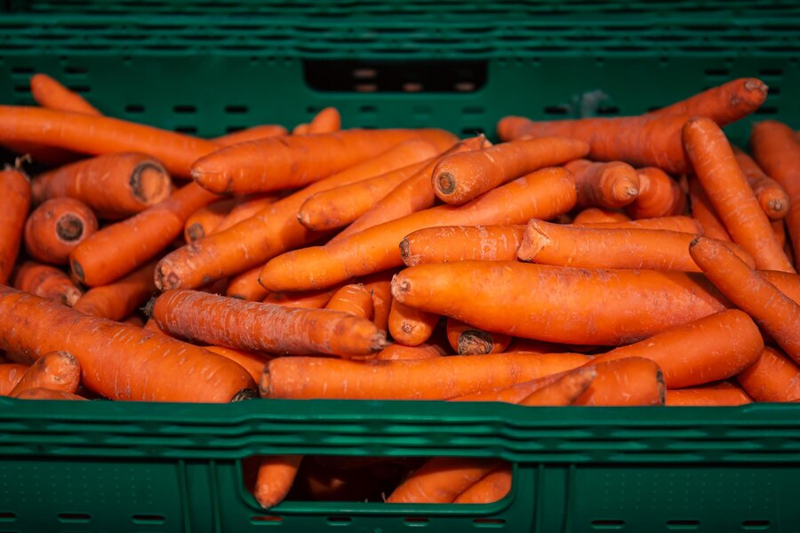

Somos un equipo decidido a abordar los desafíos de la intermediación en la agricultura colombiana. Nuestra iniciativa se centra en la creación y gestión de una plataforma de comercio electrónico especializada que conecta directamente a los agricultores con consumidores finales y mayoristas, eliminando intermediarios y promoviendo un intercambio equitativo y directo.
Ofreceremos capacitaciones para mejorar la calidad de los productos agrícolas y promover el consumo de productos locales y sostenibles. Estamos comprometidos con la transparencia y la eficiencia en las transacciones, lo que se refleja en nuestra plataforma que promueve una conexión directa y eficiente entre productores y consumidores.
Nuestra propuesta ofrece una solución innovadora que elimina intermediarios, brinda capacitación para agregar valor a los productos agrícolas, promueve el consumo de productos locales y sostenibles, y garantiza transparencia y eficiencia en las transacciones. Estamos seguros de que nuestra iniciativa será un paso significativo hacia la equidad y el desarrollo económico en las comunidades agrícolas locales.
CEO OF INUMARKET
¡Zanahorias frescas y orgánicas, cultivadas por agricultores locales ! Jugosas, crujientes y repletas de nutrientes. Ideales para cualquier plato, ya sea crudas, cocidas o en jugos. Apoya la agricultura sostenible al elegir nuestras zanahorias libres de pesticidas. ¡Ordénalas ahora y disfruta del auténtico sabor de la naturaleza en tu mesa!
¡Conoce nuestras cebollas frescas y deliciosas, cultivadas con cariño por agricultores de la región en nuestros campos ! Estas cebollas jugosas y llenas de sabor son como pequeñas joyas culinarias que hacen que cada plato sea especial. Desde ensaladas hasta guisos, ¡son la opción perfecta para darle un toque sabroso a tus comidas! Además, al comprar nuestras cebollas, estás apoyando a los agricultores locales y la agricultura sostenible. ¡Haz tu pedido ahora y disfruta de la frescura y la bondad de la granja en cada bocado!

¡Prueba nuestras papas frescas y deliciosas, cultivadas con amor por nuestros agricultores locales! Son perfectas para cualquier receta, desde asadas hasta puré. Al comprarlas, apoyas a los agricultores de tu comunidad. ¡Haz tu pedido ahora y disfruta de la auténtica calidad de la granja!

¡Prueba nuestras manzanas frescas y deliciosas, cultivadas con cariño por nuestros agricultores locales! Son perfectas para cualquier receta, desde meriendas hasta postres. Al comprarlas, apoyas a los agricultores de tu comunidad. ¡Haz tu pedido ahora y disfruta de la calidad de la granja!!

Creador del proyecto
BRANDON ESTEVEN NIÑO
3234695834
brandonq718@gmail.com
Comunicate con nosotros
Productos
Agricultores
mayoristas
Para nosotros es un placer poder desarrollar este proyecto y así incentivar el consumo de los productos agrícolas locales, permitiendo que nuestros agricultores colombianos reciban un reconocimiento mejorado.